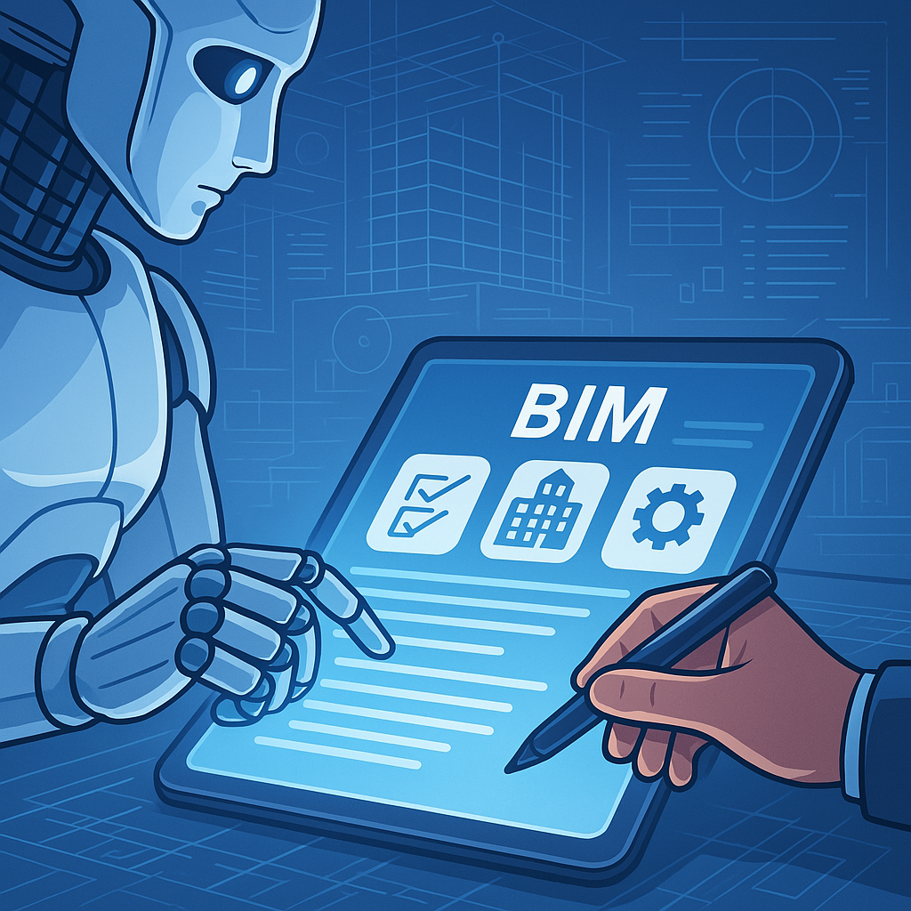

Inside a Data Center
A visual guide to understanding, designing, and speaking the language of data centers. Free 9-page preview, no strings attached.
Get the free preview
L’intelligence artificielle générative, portée par des noms comme ChatGPT, Gemini ou Copilot, est partout en ce début 2025. Elle promet d’automatiser, d’accélérer, de révolutionner nos tâches quotidiennes. Naturellement, la question se pose dans notre secteur AEC : cette IA peut-elle s’attaquer à la rédaction des documents clés qui structurent nos projets BIM ? Peut-on imaginer déléguer la création de la Charte BIM stratégique, de la Convention BIM (ou BEP – Plan d’Exécution BIM) spécifique au projet, ou du très technique CCTP (Cahier des Clauses Techniques Particulières) à une machine ? La promesse est alléchante, mais est-ce réaliste ? Cet article vise à explorer, sans battage médiatique ni pessimisme excessif, le potentiel réel de l’IA pour la rédaction de documents BIM aujourd’hui. Nous identifierons où elle peut être une aide précieuse, mais surtout, nous soulignerons les limites fondamentales et les risques qu’il est crucial de comprendre avant de se lancer.
Le Potentiel de l’IA comme Assistant Rédacteur BIM
Ne jetons pas le bébé avec l’eau du bain : l’IA peut effectivement être un assistant utile pour plusieurs aspects de la documentation BIM.
Génération de Structure & Templates
Besoin d’une trame pour votre Convention BIM ? L’IA peut vous générer rapidement une structure de document basée sur des standards reconnus, comme celle préconisée par la norme ISO 19650 (même pour les PME). Elle peut aussi créer des modèles pour des sections que vous utilisez régulièrement.
Aide à la Rédaction de Clauses Standard
Pour des paragraphes assez génériques – objectifs BIM généraux, définitions de termes courants, description des rôles BIM standards – l’IA peut proposer des formulations claires et cohérentes. Elle peut aussi suggérer différentes tournures de phrases.
Vérification de Cohérence & Synthèse
Soumise à un long texte (comme des exigences client), l’IA peut tenter d’en extraire les points clés ou de repérer d’éventuelles contradictions (mais cette capacité est limitée et demande une vérification humaine attentive). Utile pour préparer une première ébauche d’EIR/BEI.
Lutte contre la Page Blanche
Parfois, le plus dur est de commencer. Demander à l’IA de générer un premier jet, même très imparfait, sur une section donnée peut suffire à débloquer le processus de rédaction et vous donner une base sur laquelle travailler.
Aide à la Formulation & Traduction
Une phrase vous semble lourde ? L’IA peut proposer des reformulations. Besoin de traduire un terme technique ? Elle peut aider, mais attention : la traduction doit toujours être validée par un expert pour s’assurer qu’elle est correcte dans le contexte spécifique du BIM et du projet.
Analyse par Type de Document : Potentiel vs Réalité
Le potentiel de l’IA varie énormément selon la nature et la criticité du document.
La Charte BIM (Vision Stratégique de l’Entreprise)
Potentiel IA : Oui, l’IA peut aider à structurer le document, brainstormer sur les objectifs stratégiques généraux du BIM pour une entreprise type, ou rédiger des paragraphes sur la vision ou les bénéfices attendus.
Réalité & Limites : Une Charte BIM doit refléter la culture, les ressources, la maturité et les objectifs spécifiques de VOTRE entreprise. L’IA, par définition, ignore tout cela. Le contenu généré sera donc forcément générique. Il faudra une personnalisation humaine très importante pour que la Charte soit réellement alignée avec votre stratégie et vos capacités.
La Convention BIM / Le BEP (Règles du Jeu du Projet)
Potentiel IA : Elle peut fournir une structure type (pré-projet ou post-attribution), suggérer des clauses standards pour le processus de nommage, la gestion du CDE, la fréquence des réunions de coordination, ou lister les rôles types et leurs responsabilités génériques.
Réalité & Limites : C’est là que le bât blesse souvent. Un BEP efficace est ultra-spécifiqueau projet : quels acteurs précis ? Quels logiciels et versions exactement ? Quels niveaux de détail (LOD/LOI) pour quels livrables ? Quels processus de validation spécifiques ? L’IA ne peut pas inventer ces informations cruciales. Utiliser une IA pour générer un BEP complet risque fortement de produire un document générique et inapplicable, qui demandera une réécriture quasi complète par le BIM Manager ou le Coordinateur BIM pour coller à la réalité du projet. C’est une aide pour la trame, pas pour le contenu essentiel.
Le CCTP (Spécifications Techniques Détaillées)
Potentiel IA : L’IA peut éventuellement aider à organiser la structure par lots ou par ouvrages, rechercher des références de normes (DTU, EN…) potentiellement pertinentes (mais à toujours vérifier !), rédiger des descriptions très générales de systèmes (“mur en béton banché”, “fenêtre double vitrage”…), et faire une relecture orthographique/grammaticale.
Réalité & Limites : Attention, terrain miné ! C’est sans doute le document où l’IA présente le plus de risques. Elle n’a aucune expertise technique pointue. Elle ne comprend pas les performances physiques exactes requises (thermique, acoustique, résistance au feu…), les détails de mise en œuvre qui font la différence, les interactions complexes entre matériaux ou systèmes, les certifications produits spécifiques, ou les exigences réglementaires fines. Une erreur dans un CCTP peut avoir des conséquences désastreuses (non-conformités, surcoûts, problèmes de sécurité…). L’IA peut au mieux fournir une coquille très vide ; l’expertise de l’ingénieur, de l’architecte ou de l’économiste reste absolument irremplaçable pour remplir cette coquille correctement.
Les Limites Incontournables et les Risques Associés
Pourquoi cette prudence ? Parce que l’IA, aussi avancée soit-elle en 2025, souffre de limitations fondamentales pour ce type de tâche :
Manque de Contexte Réel
L’IA n’assiste pas à vos réunions, ne connaît pas les non-dits, les contraintes spécifiques du site, les préférences du client, ou les capacités réelles de vos partenaires. Elle travaille hors-sol.
Génération de Contenu Générique ou Incorrect
Le risque majeur est d’obtenir des clauses vagues, inapplicables, ou pire, techniquement ou légalement fausses. L’IA peut “inventer” des informations qui semblent plausibles mais sont erronées.
Confidentialité des Données
Point crucial : Utiliser des IA grand public (comme les versions gratuites de ChatGPT, Gemini…) pour travailler sur des documents projet revient potentiellement à envoyer vos données (ou des extraits) sur des serveurs externes où elles pourraient être utilisées pour entraîner de futurs modèles. Ne soumettez JAMAIS d’informations projet confidentielles ou de données personnelles via ces outils.
Responsabilité et Validation Humaine
Si une clause erronée issue d’une IA provoque un litige ou un problème technique, qui est responsable ? Pas l’IA. La responsabilité incombe toujours au professionnel humain qui a validé et intégré cette clause dans le document final.
Aspects Légaux et Contractuels
Charte, BEP et CCTP sont des documents à forte valeur contractuelle. L’IA n’a aucune compétence juridique pour garantir que le contenu généré est conforme aux lois, aux règlements, ou aux termes spécifiques du contrat du projet.
Le Risque de la “Boîte Noire”
Il est parfois difficile de comprendre pourquoi l’IA a généré une réponse spécifique, ce qui rend la vérification de sa pertinence et de sa source plus ardue.
Bonnes Pratiques pour Utiliser l’IA comme Assistant (et non comme Maître)
Comment donc tirer parti de l’IA intelligemment et sans risque ?
- Définir Son Rôle Strictement : Assistant / Brouillon / Relecteur : Voyez l’IA comme un stagiaire très rapide mais sans expérience : utile pour dégrossir, mais incapable de prendre la décision finale ou de valider un travail critique.
- L’Art du Prompt : Soyez Précis et Contextuel : Donnez des instructions claires et détaillées. Au lieu de “Rédige la section CDE du BEP”, essayez “Rédige un paragraphe décrivant un workflow CDE simple basé sur ISO 19650 avec 3 états (WIP, Shared, Published) et mentionnant la nécessité d’une validation avant passage à Published”. (Adaptez en fonction de la confidentialité).
- La Règle d’Or : VÉRIFICATION HUMAINE SYSTÉMATIQUE : C’est non négociable. Chaque ligne générée par une IA doit être relue, comprise, critiquée et validée par un professionnel compétent dans le domaine concerné avant d’être intégrée. C’est le principe essentiel du “Human in the loop”.
- Cibler les Tâches à Faible Risque : Privilégiez l’IA pour la structure, la reformulation, la correction de base, la recherche d’idées ou de synonymes, plutôt que pour la génération de contenu technique ou contractuel sensible.
- Gérer la Confidentialité Consciemment : Si votre entreprise dispose d’outils IA sécurisés en interne, privilégiez-les. Sinon, pour les outils publics, anonymisez au maximum vos demandes (pas de noms de projet, de clients, de détails trop spécifiques…).
Conclusion : L’IA, un Levier Puissant mais Pas Magique
Alors, l’IA peut-elle vraiment rédiger vos documents BIM essentiels en 2025 ? La réponse est nuancée : elle peut AIDER, assister, accélérer, mais certainement PAS remplacer l’expertise humaine. Oui, elle peut être un levier puissant pour structurer vos idées, générer des premiers jets, ou peaufiner la forme. Mais pour le fond, surtout pour des documents aussi critiques, techniques et contractuels que la Charte BIM, la Convention/BEP ou le CCTP, le jugement, l’expérience, la compréhension du contexte et la responsabilité du professionnel restent irremplaçables. L’IA est un outil formidable, qui va continuer d’évoluer. Apprenons à l’utiliser comme un assistant intelligent, mais gardons notre esprit critique et notre expertise au centre du processus. La qualité et la fiabilité de nos projets en dépendent.
FAQ – Questions Fréquentes
1. L’IA peut-elle remplacer mon BIM Manager pour rédiger la Convention BIM (BEP) ?
Non. L’IA( Gemini, ChatGPT ..) peut aider à générer une structure ou des clauses types, mais elle ne peut pas comprendre le contexte unique du projet, négocier avec les partenaires, adapter les processus aux contraintes réelles ou prendre la responsabilité du document. Le BIM Manager utilise son expertise pour piloter et valider ; l’IA peut être un outil dans sa boîte, pas un remplaçant.
2. Est-il risqué d’utiliser ChatGPT ou d’autres IA publiques pour mes documents BIM confidentiels ?
Oui, potentiellement très risqué. Les données soumises aux versions publiques peuvent être utilisées pour entraîner les modèles. N’y entrez jamais d’informations de projet sensibles, de données client ou de secrets d’entreprise. Privilégiez des outils IA d’entreprise sécurisés si disponibles, ou anonymisez rigoureusement vos requêtes.
3. Quel est le meilleur outil d’IA pour m’aider à rédiger mes documents BIM ?
Il n’y a pas de “meilleur” outil unique. ChatGPT, Gemini, Copilot et d’autres ont des forces et faiblesses variables. Le plus important n’est pas l’outil spécifique, mais la manière dont vous l’utilisez : la qualité de vos prompts (instructions) et, surtout, la rigueur de votre vérification humaine du résultat.
4. Puis-je demander à une IA de vérifier si ma Convention BIM est conforme à l’ISO 19650 ?
L’IA peut comparer le texte de votre Convention aux clauses textuelles de la norme ISO 19650 et signaler les similitudes ou les manques apparents si vous lui demandez précisément. Cependant, elle ne peut pas garantir la conformité réelle, car elle ne comprend pas les nuances d’interprétation, le contexte d’application ou la validité juridique de vos clauses. Une vérification par un expert connaissant bien la norme ET votre projet reste indispensable.
5. À l’avenir, l’IA sera-t-elle capable d’écrire un CCTP technique parfait toute seule ?
C’est peu probable dans un avenir proche. La rédaction d’un CCTP exige une expertise technique extrêmement pointue, constamment mise à jour, une compréhension des interactions complexes entre systèmes et matériaux, et une prise en compte des conditions spécifiques du site et des réglementations. Ce niveau de jugement et de connaissance spécialisée dépasse largement les capacités actuelles et prévisibles de l’IA. Elle deviendra peut-être une assistante encore plus performante pour les experts, mais pas une rédactrice autonome pour ce type de document critique. — Avez-vous déjà utilisé l’IA pour vous assister dans la rédaction de documents BIM ? Quels sont vos retours, vos succès, vos craintes ? La discussion est ouverte dans les commentaires !